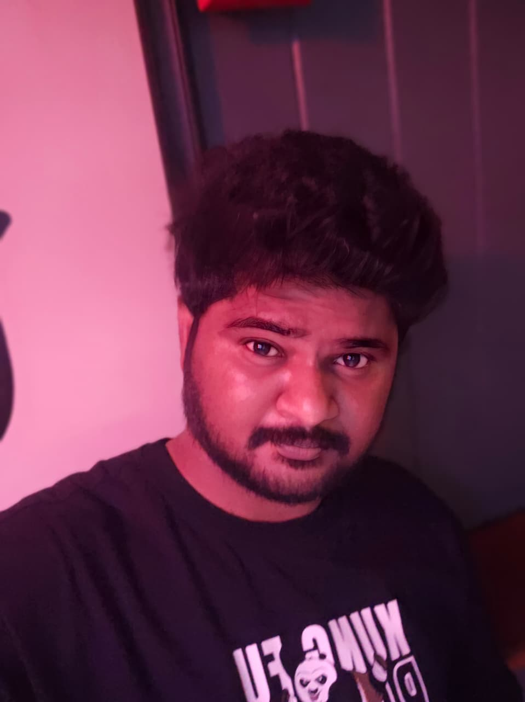

Pranay Babu Mekala

Summary:
- Approximately 5 years of professional IT experience as Quality Assurance engineer in problem solving, implementation and management of complex Web Application, software systems and maintaining the quality standards according to desired parameters.
- Hands-on experience in Executing test cases based on test strategies, analyzing and reporting test results.
- Experienced in different Testing Methodologies like Agile Model, Regression, Functional, Integration, Smoke and Ad hoc Testing.
- Hands on experience in reviewing Test Scenarios and Test cases written by Peers.
- Experienced interacting with clients and customers in assisting them with remote support, troubleshooting, application usage, managing customer escalation through emails and phone calls
Expertise on SDLC, STLC.
- Hands on experience with Core Java, SQL.
- Experience in Adobe Suite and Database management Applications
- Experience in understanding business requirements, preparing and supervising execution of test cases for system customizations/enhancements and Initiatives.
- Experienced in defect tracking and retesting the corrected defects.
- Quick learner with the ability to grasp new technologies.
- Good Knowledge on Writing SQL queries to extract data from various source tables to perform database testing.
- Excellent team player having multi-tasking abilities to finish the tight deadlines and work under pressure.
Technical Skills:
- Tools : Defect Tracking Tool (TFS), Microsoft Test Management Tool (MTM)
- Languages : JAVA, SQL.
- Database : MySQL database system.
- Operating systems : Windows 9X/2000/XP/7/8/10
- Other Tools : MS Office Tools (Excel, PowerPoint, Word, SharePoint, Power BI & PowerAuto)
Education:
- Master’s in computer science Aug 2024-Dec 2026
Texas A & M University, Kingsville, Texas
- Bachelor’s in Electronics and communication Engineering Sep 2014 – April 2018
Sree Venkateswara collage of Engineering
Professional Experience
Conduent Business Services India LLP Sep 2019-Aug 2024
Role :IT Test Engineer
Project : PrintMill
Responsibilties:
- Involved in writing Test cases by going through the requirements
- Develop, enhance, and execute the test cases
- Responding to calls from customers
- Worked with customers & Clients with remote support setup for troubleshooting and raising & closing a ticket.
- Giving demo on the features that are being deployed to the clients and customer groups
- Prepared the test cases for responsible area and prepared test input data
- Handling large amounts of data for storage and maintenance
- Involved in Executing Smoke, Functional Regression Test cases.
- Attended the meetings to discuss the fix to bugs and to know the functionality
- Preparation of defect summary reports.
- Involved in status meeting with the project team.
Personal Traits
- Adaptable and proactive problem-solver with ability to thrive in dynamic environments and deliver effective solutions.
- Strong communicator and team player with excellent interpersonal skills, consistently fostering collaboration and positive working relationships.